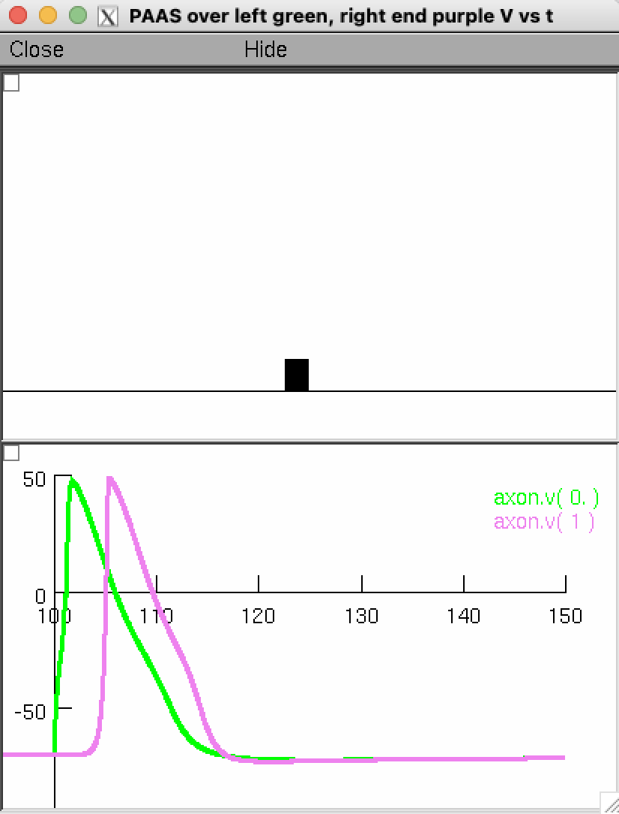
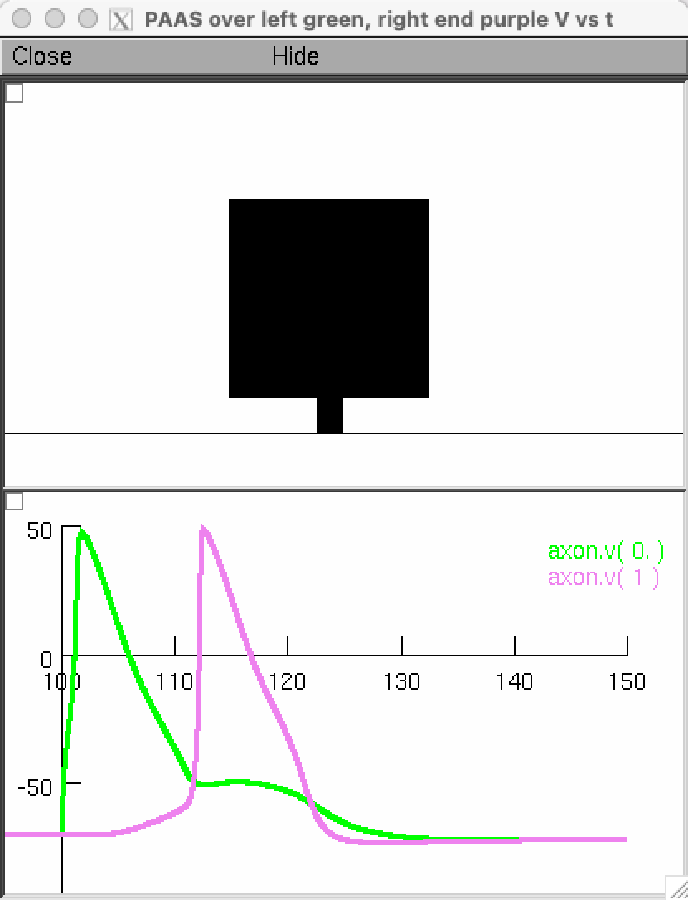
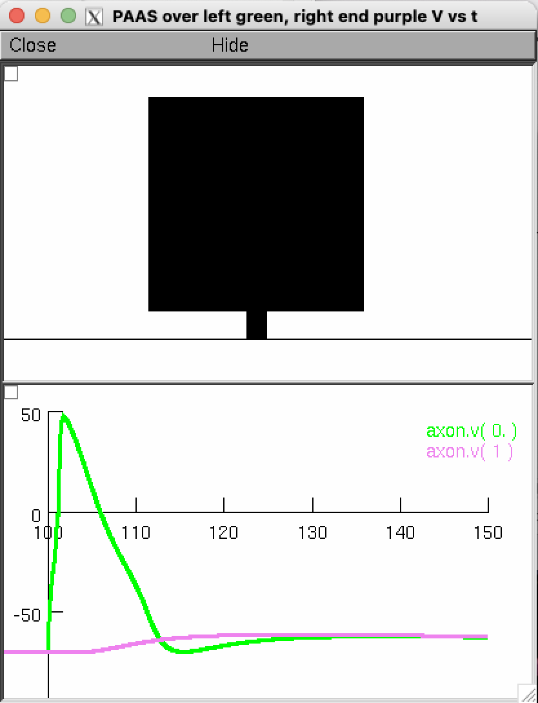
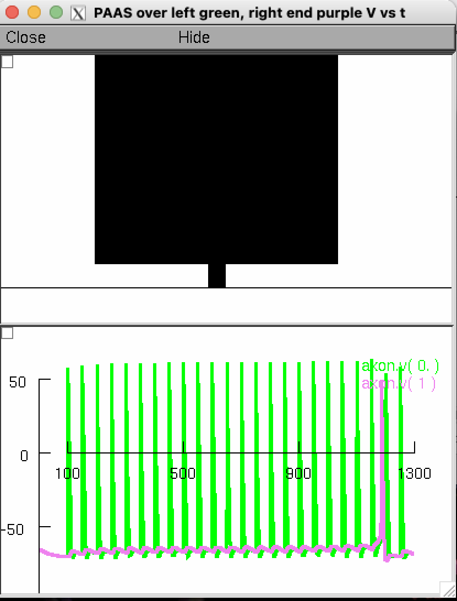
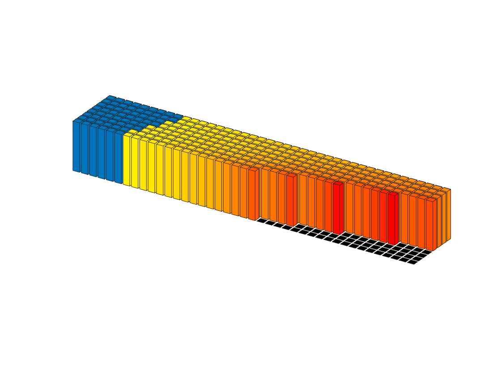
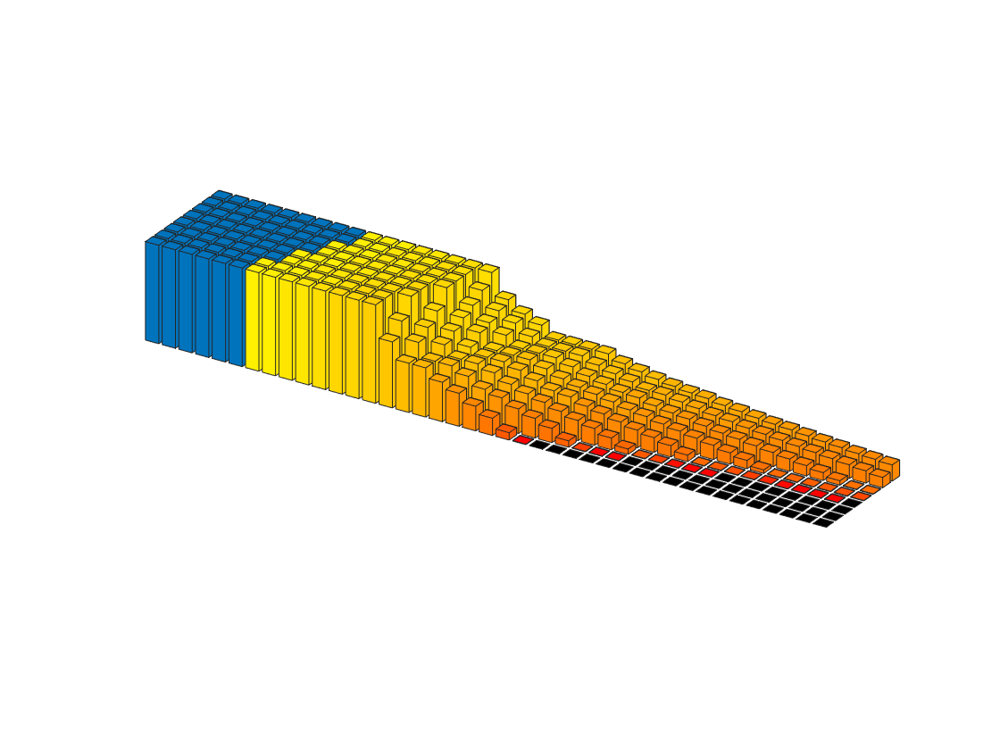

This is the readme for NEURON and MATLAB model code for the paper
Peng Yuan, Mengyang Zhang, Lei Tong, Thomas M. Morse, Robert
A. McDougal, Hui Ding, Diane Chan, Yifei Cai, Jaime Grutzendler
(2022) PLD3 impacts axonal spheroids and network defects in
Alzheimer’s disease. Nature
The NEURON code was written by Tom Morse and the MATLAB code by
Peng (Paul) Yuan and Tom Morse.
To run the NEURON code download and extract this archive and
compile the mod files with nrnivmodl. If you need more help than
provided here please
consult
https://senselab.med.yale.edu/ModelDB/NEURON_DwnldGuide
for more help.
Extended Data Figures 2a,b
please run the
mosinit.hoc with a command like
nrngui mosinit.hoc
The PAAS (plaque-associated axonal spheroid(s)) is represented
in the model by a compartment called Can (as in tomato soup can)
which is connected to the middle of an axon via a short process
called Stick and these morphologies are displayed in a zoomed in
shape plot above a voltage plot. A current clamp connected to the
left end of the axon evokes one or more action potentials (APs). The
voltage plot displays the AP(s) that is/are evoked in the left end of
the dendrite (green voltage trace) and these propagate and are
transmitted through the dystrophy or blocked. The voltage on the
right end of the axon is displayed in purple.
The left, middle, and right extended data figure 2a single AP
examples can be generated by pressing the appropriate button which
automatically sets the PAAS diameter to 1e-7 (normal), 29 (delayed),
and 40 (blocked) for the single AP cases. For 2b the spheroid
diameter example is set to 53 um, which would also block a single AP,
however will generate a delayed AP transmitted after multiple
APs when supplied with a 20 Hz AP train input.

Normal diam=1e-3 (only the connecting shaft to the dystrophy protrudes from the axon in the above)

Delayed diam=29

Blocked diam=40

Blocked then delayed transmission during 20 Hz AP input diam=53
Extended Data Figure 2e top
Run the following program which takes about a day (or skip ahead to use provided stored results)
nrngui alz_axon_serial_one_AP.hoc
When finished run the following MATLAB command which will gather the results into MATLAB matricies
load_data
or you can start with the results that alz_axon_serial_one_AP.hoc would generate by reading in the workspace that was saved after we previously ran load_data, saved, and included that mat file in this archive
load results/one_AP_input_results.mat
then execute the graphics program
[delaytime, apcount] = PlotAP(active_results, 0.15);
which generates two figures, the second figure of which is similar to extended data figure 2e top

Extended Data Figure 2e bottom
Run the following program which takes about a day (or skip ahead to use provided stored results)
nrngui alz_axon_serial_20Hz.hoc
When finished run the following MATLAB command which will gather the results into MATLAB matricies
load_data
or you can start with the results that alz_axon_serial_20Hz.hoc would generate by reading in the workspace that was saved after we previously ran load_data, saved, and included that mat file in this archive
load results/20Hz_input_results.mat
then execute the graphics program
[delaytime, apcount] = PlotAP(active_results, 0.15);
which generates two figures, the second figure of which is similar to extended data figure 2e bottom
